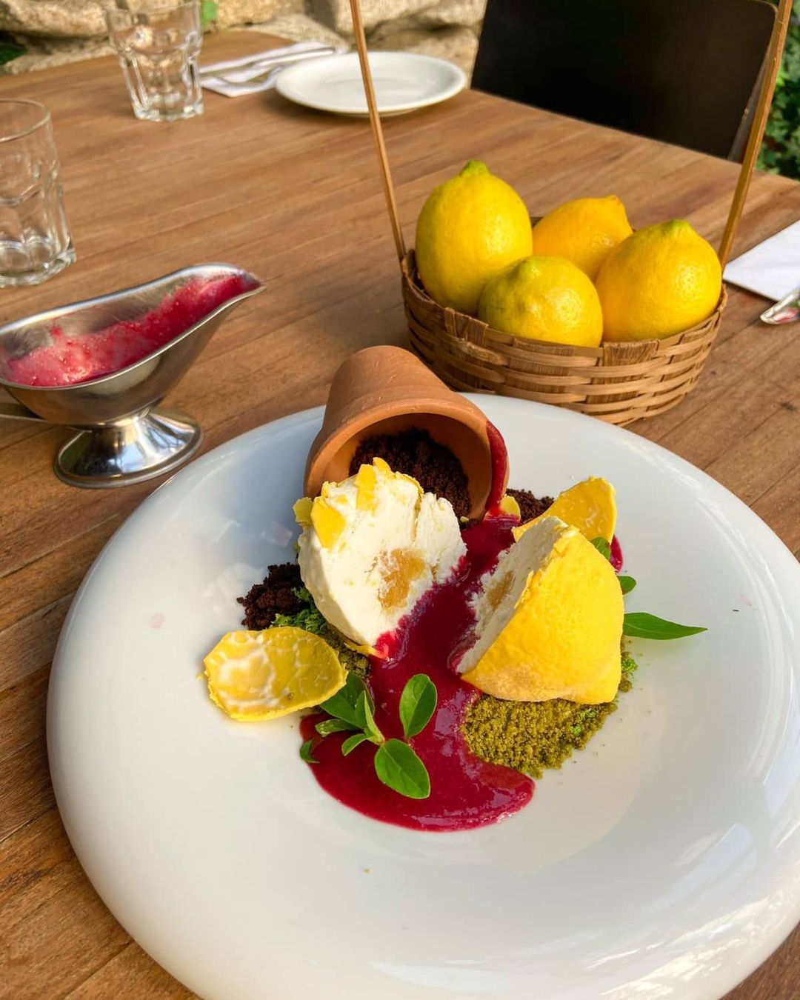

-NOVIDADES-

- Pratos exclusivos de frutos do mar: Incorporando ingredientes frescos e autênticos, como vieiras grelhadas com molho de manteiga de alho e limão ou lagosta ao molho sugo e manjericão.
- Opções Veganas e vegetarianas: Atendendo à demanda crescente por alternativas de origem vegetal, com pratos como risoto de cogumelos selvagens ou massas artesanais de rúcula. Diversas variedades a mais que estamos buscando alcançar e disponibilizar a todos vocês!!
- Abertura da filial em Brasília: Com um design limpo e elegante, a nova filial do Di Marino em Brasília combina o charme tradicional italiano com belíssimos ambientes que farão total diferença ao degustar os deliciosos pratos feitos com muito carinho. Estaremos esperando vocês.